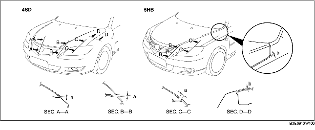

REGLAGE DE CAPOT
B3E091056601W02
Réglage de l'écartement
1. Déposer les pièces suivantes :
-
(1) Clignotants latéraux avant (voir la section DEPOSE/REPOSE DE CLIGNOTANT LATERAL AVANT.)
-
(2) Pare-chocs avant (voir la section DEPOSE/REPOSE DE PARE-CHOCS AVANT.)
-
(3) Feux combinés avant (voir la section DEPOSE/REPOSE DE FEU COMBINE AVANT.)
-
(4) Panneau d'aile avant (voir la section DEPOSE/REPOSE DE PANNEAU D'AILE AVANT.)
2. Desserrer les boulons de fixation de charnière de capot, et régler la position du capot.
3. Serrer les boulons.
4. Vérifier si l'écartement entre le capot et la carrosserie est conforme aux spécifications.
-
Jeu standard
-
a : 0,2-3,8 mm {0,0079-0,14 in}
-
b : -1,0-3,0 mm {-0,039-0,11 in} (4SD)
-
b : -1,5-2,5 mm {-0,059-0,098 in} (5HB)
-
c : -0,5-2,5 mm {-0,019-0,098 in} (4SD)
-
c : -1,0-2,0 mm {-0,039-0,078 in} (5HB)
-
d : 2,5-4,5 mm {0,10-0,17 in}
Réglage de différence de hauteur
1. Tourner le caoutchouc d'arrêt pour effectuer le réglage de la hauteur du capot.
2. Vérifier si la différence de hauteur entre le capot et la carrosserie est conforme aux spécifications.

-
Jeu standard
-
a : 3,0-6,0 mm {0,12-0,23 in}
-
b : -1,5-0,5 mm {-0,059-0,019 in}
-
c : -1,0-1,0 mm {-0,39-0,39 in}